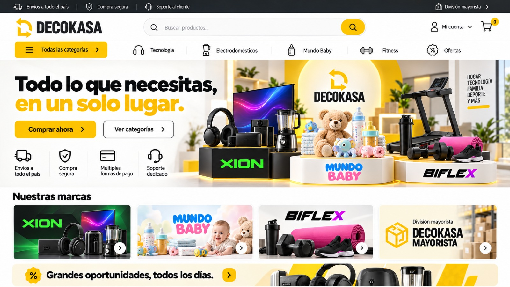

Odoo
SKU, variantes operativas, unidades de venta, almacenes y disponibilidad vendible. Rendimiento técnico, como m² por caja, puede originarse aquí.
DECOKASA · investigación inicial · 05 octubre 2026
Propuesta para empezar desde cero: portada multimarcas, páginas de producto y funciones como el calculador de piso PVC.
Construir un tema nativo Shopify Online Store 2.0: el diseño se mantiene en GitHub, mientras productos, imágenes y contenido comercial se editan en Shopify. Integrar Odoo.sh mediante un conector compatible o un módulo propio, después de definir las reglas de stock, precios y pedidos. [1] [2] [7]
Estado: clonación local, registro en hidra, mockup preservado e investigación. No se han creado archivos, commits ni cambios en el repositorio, ni conectado Shopify u Odoo.
| Necesidad | Capacidad | Límite / condición |
|---|---|---|
| Home y marcas | Buscador, categorías, hero, marcas, promociones y carrito con secciones editables. | Adaptación móvil y rendimiento. Textos esenciales en HTML; banners e imágenes optimizados. [1] |
| Landing por producto | Cada producto tiene URL propia; plantillas estándar, PVC y cotización con contenido por producto. | Compartir plantillas y usar metacampos. Máximo 1.000 plantillas JSON por tema. [3] [4] |
| Catálogo e imágenes | Edición sencilla en Shopify de fotos, textos, SEO, colecciones y atributos de presentación. | El conector debe evitar sobrescribir estos campos. GitHub versiona el tema, no los registros del catálogo ni la biblioteca de medios. [2] [4] |
| Odoo.sh | Admite módulos personalizados y pruebas en desarrollo/staging. | Confirmar versión, suscripción, compatibilidad y soporte del conector. Documentación consultada: Odoo 19; versión del negocio pendiente. [7] [8] [9] |
| Funciones especiales | Calculadores, selectores, tablas técnicas y formularios en las páginas. | Credenciales y validación de cotizaciones formales en lógica segura de Odoo.sh o un servicio. [1] [6] |
| Checkout | Compra con checkout Shopify; calculador antes del carrito. | Extensiones de interfaz en información, envío y pago requieren Plus. El calculador propuesto no obliga a contratar Plus. [5] |
Reparto propuesto; validar con el catálogo real antes de implementar.
SKU, variantes operativas, unidades de venta, almacenes y disponibilidad vendible. Rendimiento técnico, como m² por caja, puede originarse aquí.
Fotos, videos, textos comerciales, SEO, colecciones, banners y presentación de cada producto.
Diseño, componentes, plantillas y calculadores del tema. Desarrollo coordinado con el editor de Shopify.
Precio: definir una autoridad por campo. Propuesta pendiente: tarifa base Odoo y promociones web deliberadas en Shopify, con reglas de margen. Los SKU y las unidades deben coincidir.
El cliente ingresa m² y variante; la página muestra merma, cajas necesarias, cobertura real y estimación. El carrito recibe cajas enteras, con la misma unidad de inventario en Shopify y Odoo.
Ejemplo ficticio: 20 m², 10 % de merma y 2 m²/caja → 11 cajas, que cubren 22 m². Cada producto necesita sus valores técnicos reales.
Distinguir estimación de precio final con descuentos, impuestos, envío o instalación. Para una cotización formal en Odoo, validar producto, precio y disponibilidad en servidor. Un pedido preliminar Shopify puede ofrecer un enlace de pago si el flujo evita duplicar pedidos y reservas. [6] [12]
Priorizar apps oficiales: Facebook & Instagram con Pixel y Conversions API; TikTok con Pixel y Events API según nivel de datos; Google & YouTube con GA4, Google Ads y catálogo Merchant Center. Verificar disponibilidad por país/cuenta y configurar consentimiento. [13] [14] [15] [16] [17]
Medir vista de producto, uso del calculador, solicitud de cotización, carrito, checkout y compra. Alinear IDs de variantes y eventos; evitar conversiones duplicadas entre apps y código propio.
Los píxeles recogen acciones web. Inversión, métricas de anuncios y rendimiento de creativos requieren fuentes publicitarias adicionales: para Meta/TikTok se utilizarán las bases Vivibox de solo lectura. Conservar UTMs e identificadores disponibles; separar cotización de compra. La atribución puede diferir entre plataformas.

Conservar identidad amarilla/negra/blanca y jerarquía de búsqueda, categorías y marcas. Adaptar a móvil con texto legible, navegación por teclado, contraste y controles táctiles de al menos 44 px. Validar marcas y promesas de envío, pago y soporte antes de publicar.
Mayorista puede comenzar con una colección o página de cotización. Precios por cliente, crédito y operación B2B completa requieren definición aparte.
Costos: plan Shopify, procesamiento y comisiones aplicables, conector o desarrollo/mantenimiento, apps necesarias y alojamiento adicional si se elige un servicio externo. Sin proveedor ni compras seleccionados.
Pendiente: versión Odoo; URL/plan Shopify; muestra SKU/variantes y PVC; precios/promociones; almacenes y reservas; cotizaciones, envío e instalación. Odoo.sh, ausencia de conector y tienda desde cero ya están confirmados.
Documentación primaria registrada el 05/10/2026. Capacidades documentadas, propuestas y pendientes están diferenciados. Revisar versiones API y condiciones al implementar.
Repositorio DECOKASA · Registro de integridad del mockup. Investigación y referencia guardadas fuera del repositorio.